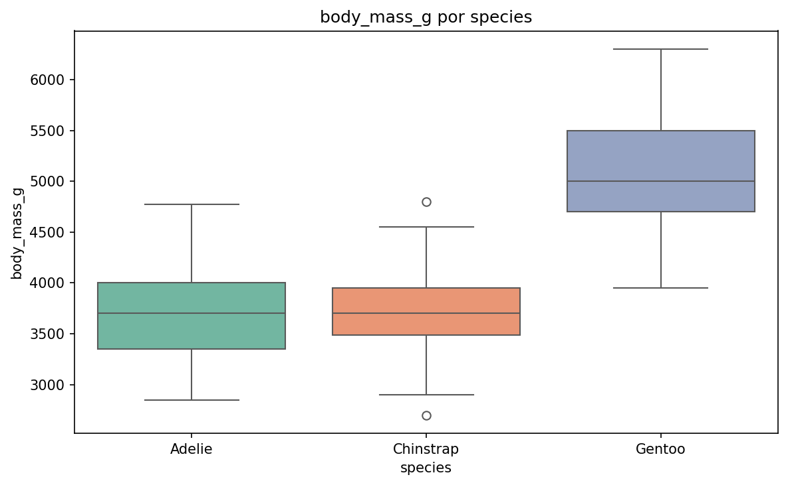
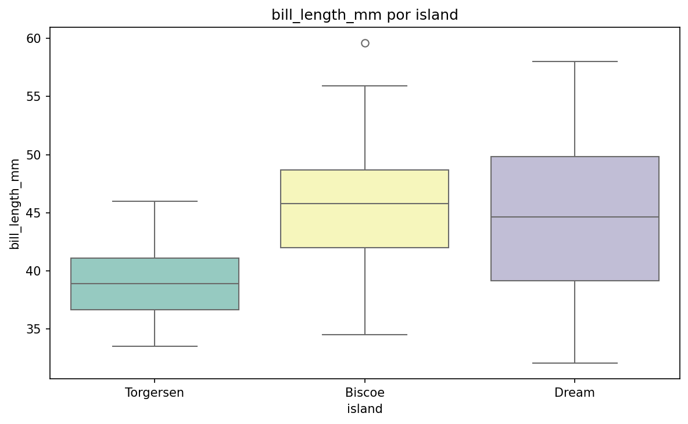
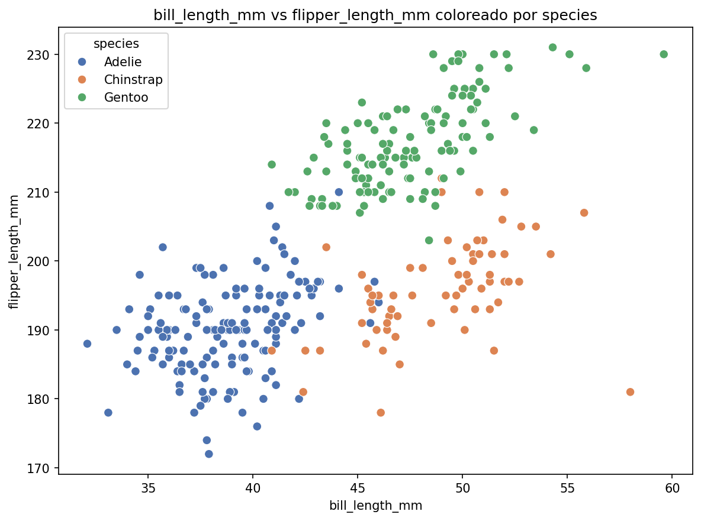
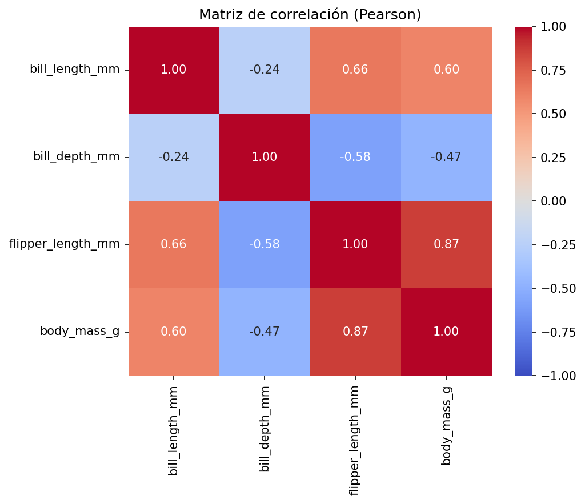

Analizar la estructura, la distribución y las relaciones entre variables del dataset de pingüinos, con base en los artifacts generados por el runner y la evidencia estadística asociada.
Fuente: artifact 00_raw_profile.json
sexbill_length_mm, bill_depth_mm, flipper_length_mm y body_mass_g| Variable | Media | Desv. Est. | Mín. | Máx. |
|---|---|---|---|---|
| bill_length_mm | 43.922 | 5.460 | 32.1 | 59.6 |
| bill_depth_mm | 17.151 | 1.975 | 13.1 | 21.5 |
| flipper_length_mm | 200.915 | 14.062 | 172.0 | 231.0 |
| body_mass_g | 4201.754 | 801.955 | 2700.0 | 6300.0 |
La matriz de correlación Pearson muestra que la asociación más fuerte es entre flipper_length_mm y body_mass_g (r = 0.871).
También se observa una correlación positiva importante entre bill_length_mm y flipper_length_mm (r = 0.656).
La relación entre bill_length_mm y body_mass_g fue de r = 0.595.




Prueba: ANOVA de una vía
Resultado: F = 343.626, p = 2.89e-82
Evidencia: sí, la respalda.
Prueba: chi-cuadrado de independencia
Resultado: chi2 = 299.55, dof = 4, p = 1.35e-63
Evidencia: sí, la respalda.
Prueba: correlación de Pearson
Resultado: r = 0.656, p = 1.74e-43
Evidencia: sí, la respalda.
El dataset presenta diferencias morfológicas claras por especie, una asociación notable entre especie e isla,
y una correlación positiva significativa entre la longitud del pico y la longitud de la aleta.
Estas asociaciones están respaldadas por evidencia estadística del archivo 08_tests.json.
Sin embargo, no puede afirmarse causalidad: solo puede sostenerse que existen relaciones estadísticamente
relevantes entre las variables examinadas.
El enfoque clásico en un notebook manual suele ser más lineal y explícito: el analista escribe el código paso a paso, decide qué explorar, ejecuta celdas en orden y valida cada resultado manualmente antes de avanzar. Eso da mucha transparencia sobre qué se hizo en cada bloque, pero también exige más disciplina y vigilancia humana: si se cambia un filtro, una limpieza o una hipótesis, es fácil perder trazabilidad y propagar errores sin darse cuenta. En términos de reproducibilidad, un notebook manual puede ser muy reproducible cuando está bien documentado y se usa un entorno fijo, pero depende mucho de la calidad del proceso manual y de la disciplina del usuario para mantener un registro claro de las decisiones.
El enfoque con agentes, como el que usamos en este laboratorio, cambia el flujo porque la lógica de análisis se articula como una conversación en fases: OBSERVE, DESCRIBE y HYPOTHESIZE_AND_CONCLUDE. El agente propone qué hacer, el runner ejecuta la operación y se generan artifacts (JSON y PNG) que sirven como evidencia formal. Esto aporta ventajas importantes: aumenta la estructura del análisis, reduce la carga cognitiva del analista y mejora la trazabilidad porque cada etapa queda reflejada en archivos específicos. También ayuda a mantener un criterio más homogéneo y a documentar mejor las decisiones. En términos de control de errores, el agente puede ser útil para evitar sesgos de análisis y para reforzar la regla de que las conclusiones deben basarse en evidencia disponible, pero también tiene una limitación importante: depende de la calidad del prompt, del alcance de las herramientas y de la supervisión humana para evitar interpretaciones demasiado amplias o ejecución no deseada.
En resumen, el enfoque clásico ofrece más control directo y más libertad analítica, pero requiere mayor esfuerzo manual y más riesgo de errores de procedimiento. El enfoque con agentes ofrece mayor organización, trazabilidad y automatización del flujo de análisis, pero exige una supervisión explícita para garantizar reproducibilidad, validación y que la evidencia siga siendo rigurosamente la que aparece en los artifacts. En otras palabras, el notebook manual favorece la ejecución detallada y personalizada; el enfoque con agentes favorece la estructura y la documentación, aunque con menos control operativo fino por parte del analista.